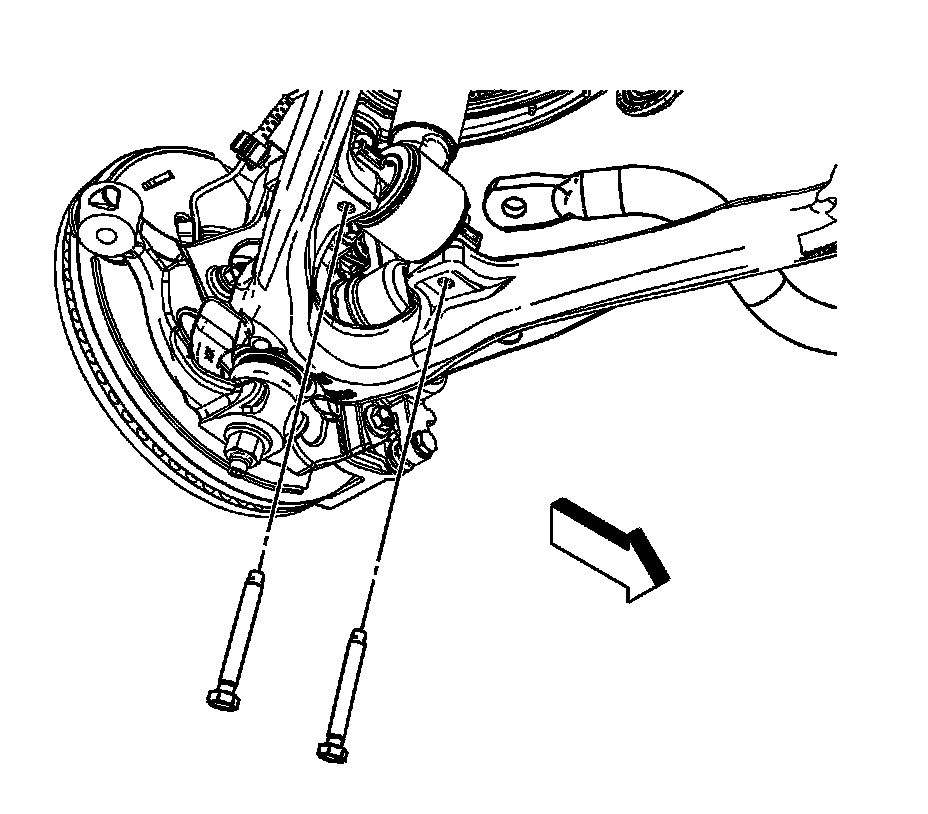
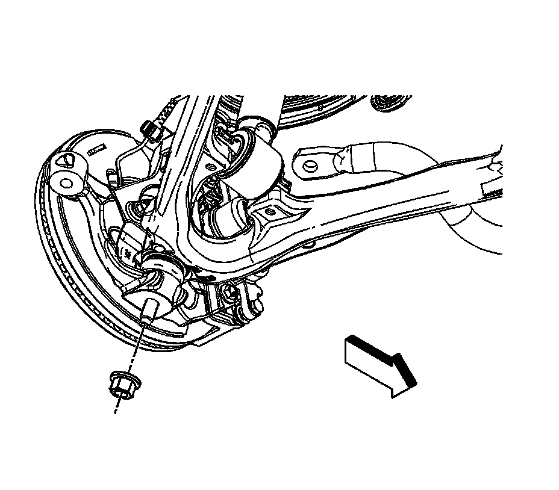
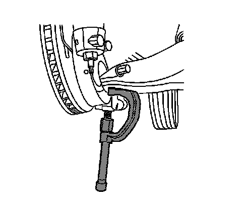

Lower Control Arm Replacement (1500 Series)
Lower Control Arm Replacement (1500 Series)
Tools Required
^ J 43631 Ball Joint Separator
^ J 45851 Ball Joint Separator Protector Adapters
Removal Procedure
Important: The lower ball joint and control arm are serviced as an assembly and are not serviced separately.
1. Raise and support the vehicle. Refer to Lifting and Jacking the Vehicle.
2. Support the lower control arm with a safety stand.
3. Remove the tire and wheel.
4. Remove the stabilizer shaft links from the lower control arm.

5. Remove the 2 lower shock absorber module mount bolts.
6. If equipped, remove the wheel drive shaft nut.

7. Remove the lower ball joint retaining nut.

8. Using the J 43631 and the J 45851, remove the lower ball joint from the steering knuckle.
9. Remove the lower control arm nuts and washers.
10. Remove the control arm bolts.
11. Remove the control arm.
Installation Procedure
1. Install the lower control arm.
2. Install the lower control arm bolts.
3. Install the washers.
Notice: Refer to Fastener Notice.
4. Install the lower control arm retaining nuts.
Tighten nuts to 175 N.m (129 lb ft).
5. Install the lower ball joint in the steering knuckle.
6. If equipped, install the wheel drive shaft.
Tighten nut to 240 N.m (177 lb ft).
7. Install the lower ball joint retaining nut.
Tighten nuts to 100 N.m (74 lb ft).
8. Install the 2 lower shock absorber module mount bolts.
Tighten bolts to 50 N.m (37 lb ft).
9. Install the stabilizer shaft links to the lower control arm.
10. Install the tire and wheel.
11. Remove the safety stands.
12. Lower the vehicle.
13. Align the front end. Refer to Measuring Wheel Alignment.